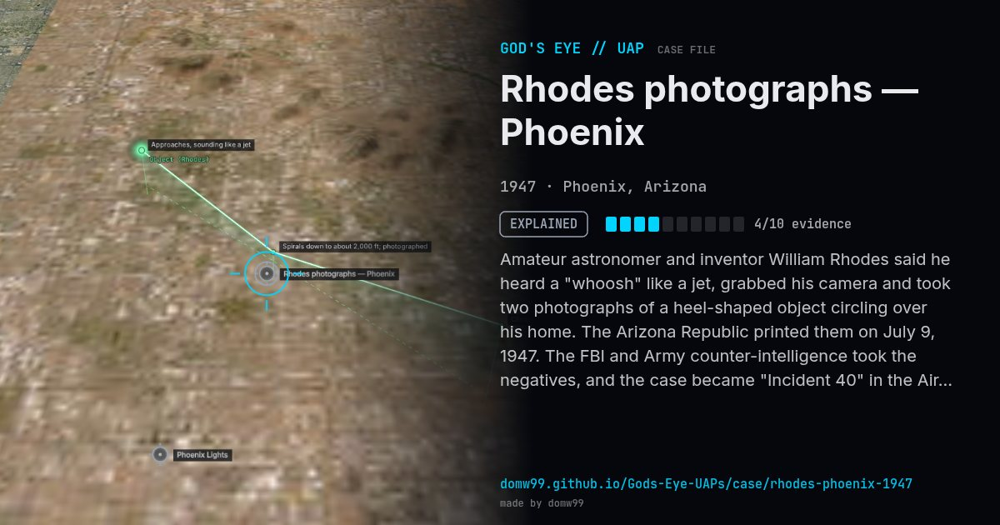

Rhodes photographs — Phoenix

Amateur astronomer and inventor William Rhodes said he heard a "whoosh" like a jet, grabbed his camera and took two photographs of a heel-shaped object circling over his home. The Arizona Republic printed them on July 9, 1947. The FBI and Army counter-intelligence took the negatives, and the case became "Incident 40" in the Air Force files, one of the first UFO photographs to be studied officially.
Explanation
The Air Force file records that Dr. Irving Langmuir, told a thunderstorm had just passed, judged the object to be paper carried up by the wind; photographers it consulted doubted the pictures. A historian has since argued they were faked.
What was seen
Shape: Heel-shaped disc with a hole in the centre
Witnesses: 1 (William A. Rhodes)
Duration: Under a minute
Browse
- United States
- 1940s
- Explained
- Photo and video cases
- Official government documents
- Photographs
- Discs and saucers